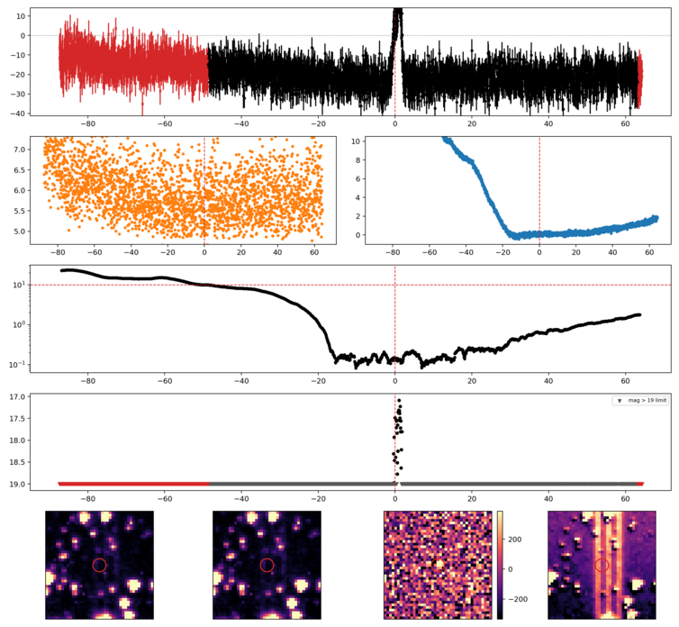
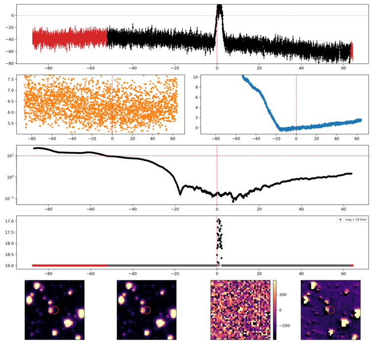
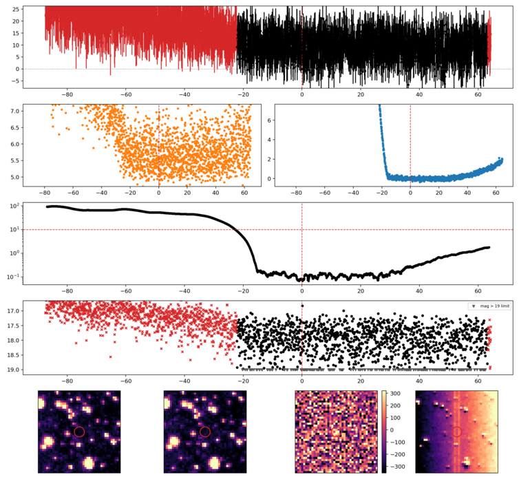
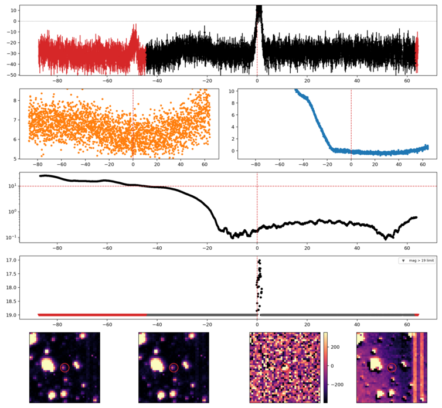
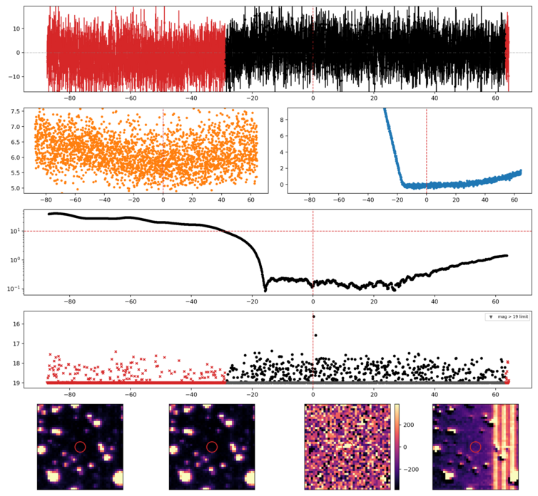
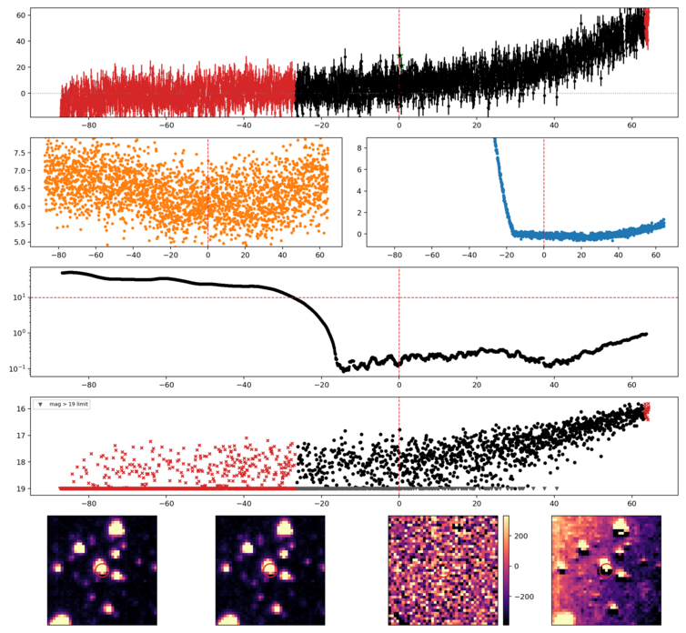

Search centered on refined position (44.2715472, +1.6972393 deg). Gaia coordinates are at J2016.0; proper motions are shown, without epoch propagation. A positional match does not change the candidate flags.
No Gaia DR3 sources found within 5 arcseconds.
Retrieved 2026-11-04T06:07:50.938957+00:00

Search centered on refined position (44.9920261, +2.3070576 deg). Gaia coordinates are at J2016.0; proper motions are shown, without epoch propagation. A positional match does not change the candidate flags.
No Gaia DR3 sources found within 5 arcseconds.
Retrieved 2026-11-04T06:07:51.779869+00:00

Search centered on refined position (47.5851688, -9.3988334 deg). Gaia coordinates are at J2016.0; proper motions are shown, without epoch propagation. A positional match does not change the candidate flags.
No Gaia DR3 sources found within 5 arcseconds.
Retrieved 2026-11-04T06:07:52.953126+00:00

Search centered on refined position (47.1923097, +2.6914906 deg). Gaia coordinates are at J2016.0; proper motions are shown, without epoch propagation. A positional match does not change the candidate flags.
No Gaia DR3 sources found within 5 arcseconds.
Retrieved 2026-11-04T06:07:53.854765+00:00

Search centered on refined position (55.9801835, +0.9957065 deg). Gaia coordinates are at J2016.0; proper motions are shown, without epoch propagation. A positional match does not change the candidate flags.
No Gaia DR3 sources found within 5 arcseconds.
Retrieved 2026-11-04T06:07:54.693288+00:00

Search centered on refined position (41.8126670, -13.4794869 deg). Gaia coordinates are at J2016.0; proper motions are shown, without epoch propagation. A positional match does not change the candidate flags.
No Gaia DR3 sources found within 5 arcseconds.
Retrieved 2026-11-04T06:07:55.586236+00:00